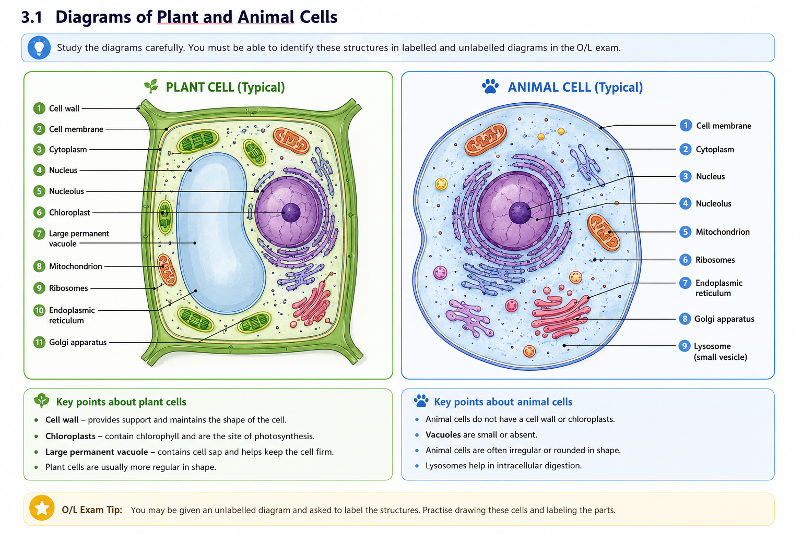
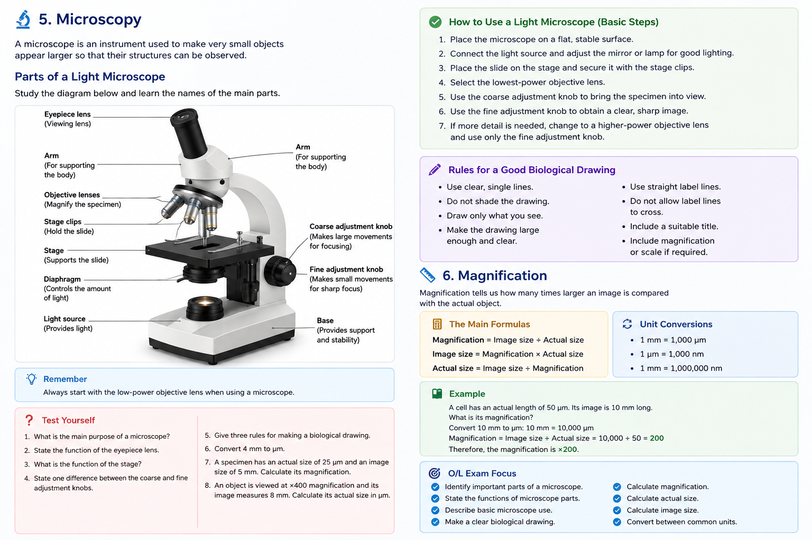

BIOLOGY • O/L NOTES
🔬 Cells & Microscopy
Understand cells, their structures, specialized cells, microscopes, magnification and biological drawings.
🧬 1. Cell Theory
The cell is the basic structural and functional unit of life. All living organisms are made up of cells, and cells carry out the activities necessary for life.
🧠 Key Definition
Cell: The basic structural and functional unit of a living organism.
📖 Main Principles of Cell Theory
- All living organisms are made up of one or more cells.
- The cell is the basic structural and functional unit of life.
- All cells arise from pre-existing cells.
🦠 Unicellular Organisms
A unicellular organism consists of only one cell. The single cell carries out all the functions necessary for survival.
Examples include bacteria and Amoeba.
👥 Multicellular Organisms
A multicellular organism consists of many cells. Cells may become specialized to perform different functions.
Examples include humans and maize plants.
📊 Remember
Unicellular → one cell
Multicellular → many cells
🧩 2. Levels of Organization
In multicellular organisms, cells are organized into increasingly complex levels.
➡️ Organization Pathway
Cell → Tissue → Organ → Organ System → Organism
- Cell: Basic unit of life.
- Tissue: A group of similar cells working together.
- Organ: A structure made from different tissues working together.
- Organ system: A group of organs working together.
- Organism: A complete living individual.
🦠 3. Prokaryotic & Eukaryotic Cells
Cells can be broadly divided into prokaryotic and eukaryotic cells.
🦠 Prokaryotic Cells
Prokaryotic cells are generally small and relatively simple. Bacteria are examples of organisms containing prokaryotic cells.
🔬 Main Features
- No membrane-bound nucleus.
- DNA is found in a nucleoid region.
- No membrane-bound organelles.
- Ribosomes are present.
- Many bacteria have a cell wall.
🧬 Eukaryotic Cells
Eukaryotic cells are generally more complex and contain a membrane-bound nucleus.
Plants, animals, fungi and many protists have eukaryotic cells.
🔬 Main Features
- Membrane-bound nucleus.
- Membrane-bound organelles.
- Ribosomes.
- More complex internal organization.
📊 Comparison
| Feature | Prokaryotic | Eukaryotic |
|---|---|---|
| Membrane-bound nucleus | Absent | Present |
| Membrane-bound organelles | Absent | Present |
| Size | Generally smaller | Generally larger |
| Example | Bacteria | Plants and animals |
🌱 4. Plant Cells
Plant cells are eukaryotic cells. They contain structures shared with animal cells as well as structures that are particularly important for plant functions.

Plant and animal cell structures
Study the labelled structures and compare the two cell types carefully.
🔬 Main Plant Cell Structures
- Cell wall: Provides support and helps maintain the shape of the cell.
- Cell membrane: Controls movement of substances into and out of the cell.
- Cytoplasm: Contains organelles and is the site of many chemical reactions.
- Nucleus: Contains genetic material and controls cell activities.
- Mitochondria: Site of aerobic respiration and energy release.
- Ribosomes: Sites of protein synthesis.
- Chloroplasts: Contain chlorophyll and are the main site of photosynthesis.
- Large permanent vacuole: Contains cell sap and helps maintain turgor.
🐾 5. Animal Cells
Animal cells are also eukaryotic cells.
🔬 Important Structures
- Cell membrane
- Cytoplasm
- Nucleus
- Mitochondria
- Ribosomes
Typical animal cells do not have a cellulose cell wall, chloroplasts or one large permanent central vacuole.
📊 6. Plant Cells vs Animal Cells
| Structure | Plant Cell | Animal Cell |
|---|---|---|
| Cell membrane | Present | Present |
| Cytoplasm | Present | Present |
| Nucleus | Present | Present |
| Mitochondria | Present | Present |
| Ribosomes | Present | Present |
| Cell wall | Present | Absent |
| Chloroplasts | Present in photosynthetic cells | Absent |
| Large permanent vacuole | Usually present | Usually absent |
🧬 7. Specialized Cells
In multicellular organisms, cells become specialized to perform particular functions.
🧠 Structure → Adaptation → Function
The structure of a specialized cell is adapted to help it perform its particular function efficiently.
🌱 Root Hair Cell
Root hair cells absorb water and mineral ions from the soil.
- Long extension gives a large surface area.
- Thin wall gives water a short diffusion pathway.
- Large vacuole helps water uptake.
- Mitochondria provide energy for active transport of mineral ions.
🌿 Palisade Cell
Palisade cells are specialized for photosynthesis.
- Many chloroplasts absorb light.
- They are positioned near the upper surface of the leaf.
- Their shape allows efficient packing.
🍃 Guard Cells
Guard cells control the opening and closing of stomata.
- They change shape as their water content changes.
- They contain chloroplasts.
- Their arrangement controls the stomatal pore.
🩸 Red Blood Cell
Red blood cells transport oxygen around the body.
- Biconcave shape provides a large surface area.
- Mature mammalian red blood cells lack a nucleus, leaving more room for haemoglobin.
- Haemoglobin combines with oxygen.
- Flexible membrane allows movement through narrow blood vessels.
🧬 Sperm Cell
The sperm cell is the male gamete and is adapted for reaching the female gamete.
- Flagellum allows movement.
- Many mitochondria provide energy.
- Acrosome contains substances involved in fertilization.
- Streamlined shape assists movement.
🔬 8. Microscopy
A microscope is an instrument used to make very small objects appear larger so that their structures can be observed.

Labelled light microscope
Study the labelled microscope carefully.
⚙️ Important Microscope Parts
- Eyepiece lens: The lens through which the specimen is viewed.
- Objective lenses: Magnify the specimen.
- Stage: Supports the microscope slide.
- Stage clips: Hold the slide in position.
- Light source: Provides light for viewing the specimen.
- Coarse adjustment knob: Makes large focusing adjustments.
- Fine adjustment knob: Makes small adjustments to obtain a sharper image.
- Diaphragm: Controls the amount of light passing through the specimen.
🧫 Preparing a Temporary Slide
- Place a thin specimen on a clean slide.
- Add a suitable drop of water or mounting liquid when required.
- Lower the coverslip carefully.
- Remove excess liquid if necessary.
⚠️ Good Microscope Practice
- Start with the lowest-power objective.
- Position the specimen correctly.
- Use appropriate focusing controls.
- Handle slides and coverslips carefully.
✏️ 9. Biological Drawings
A biological drawing should represent the specimen accurately rather than being an artistic drawing.
🎯 Rules for Biological Drawings
- Use clear, single lines.
- Do not shade.
- Draw only structures that are observed.
- Make the drawing large enough.
- Use straight label lines.
- Avoid crossing label lines.
- Include an appropriate title.
- Include magnification or scale information when required.
📏 10. Magnification
Magnification tells us how many times larger an image is compared with the actual object.
🧮 Formulae
Magnification = Image size ÷ Actual size
Image size = Magnification × Actual size
Actual size = Image size ÷ Magnification
📐 Unit Conversions
- 1 mm = 1,000 μm
- 1 μm = 1,000 nm
- 1 mm = 1,000,000 nm
🧠 Worked Example
A cell has an actual size of 50 μm and its image measures 10 mm. Calculate the magnification.
10 mm = 10,000 μm
Magnification = 10,000 ÷ 50
Magnification = ×200
🧮 Magnification Calculator
Enter the values you know and StudyHub will calculate the missing value.
🎯 O/L GCE Exam Focus
📝 You should be able to:
- Define a cell.
- State the principles of cell theory.
- Distinguish between prokaryotic and eukaryotic cells.
- Identify plant and animal cell structures.
- State functions of cell organelles.
- Compare plant and animal cells.
- Explain adaptations of specialized cells.
- Identify microscope parts and state their functions.
- Make accurate biological drawings.
- Calculate magnification.
- Calculate actual size.
- Calculate image size.
- Convert biological measurement units.
📝 GCE-Style Test Yourself
These questions are designed around the types of knowledge and skills commonly required in Biology examinations.
- Define a cell.
- State three principles of cell theory.
- Distinguish between a unicellular and multicellular organism.
- State one example of a prokaryotic organism.
- State two differences between prokaryotic and eukaryotic cells.
- State the function of the nucleus.
- State the function of mitochondria.
- What is the function of chloroplasts?
- State two differences between plant and animal cells.
- Explain how the structure of a root hair cell is adapted for absorption.
- State the function of a palisade cell.
- What is the function of guard cells?
- State two adaptations of a red blood cell.
- Explain how a sperm cell is adapted for movement.
- What is the function of the eyepiece lens?
- State the function of the coarse adjustment knob.
- State the function of the fine adjustment knob.
- Why should a microscope normally be started using the lowest-power objective?
- State three rules for making a biological drawing.
- Convert 4 mm to μm.
- Convert 3,000 μm to mm.
- State the formula for magnification.
- An image measures 5 mm and the actual specimen is 25 μm. Calculate the magnification.
- An object is viewed at ×400 and its image measures 8 mm. Calculate its actual size in μm.
- Explain why cells need to be magnified when studying them with a light microscope.
⚡ Quick Revision
Cell → Tissue → Organ → Organ system → Organism
Magnification = Image size ÷ Actual size
Structure → Adaptation → Function
Remember the major differences between plant and animal cells, and between prokaryotic and eukaryotic cells.